The Simulator
The first part of the simulator module is for designing and analysing a shop floor layout. Using the mouse, machine tools can be chosen, moved into place and then given a name and characteristics. The shop floor can be re-designed to suit the particular machine tool installation, or made up to show a completely simulated factory.
A range of machine tools may be included in the shop floor layout to do any type of job. The default set is for metal-working manufacturing and includes: Lathes and Millers of different sizes; different types of Robot; Measuring and Inspection devices; Automatic Storage and Retrieval Systems (AS/RS); Material Hoppers; Conveyors and Automatic Guided Vehicles (AGV). These machines are grouped into functional categories such as ‘Tool’, ‘Inspection’ and ‘Transport’ devices. This helps in the design and cellular analysis of the shop floor.
As with a real system, the user is free to design the particular Conveyor layout using modular conveyor sections that match the available hardware. Similarly the AGV route can be defined and altered to suit the particular shop floor design.
When the shop floor layout is completed, the user may calculate the cellular structure of the shop floor. The software groups machine tools into autonomous cells and displays the result to the user. These cells may be altered according to the user’s needs.
A further analysis tool can be used to show the connectivity of the machine tools on the shop floor. A Transportation Network can be created which shows how material is moved about the shop floor.
Usage
When the Configurator is started, the main screen is displayed, showing the menu and the tool-bar which contains the current selection of available machine tools.
The window initially shows a new, empty shop floor. While the Configurator is running, a new shop floor can be created at any time using the
New item in the File menu.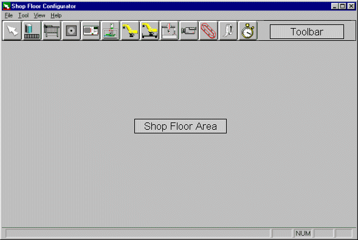
The cursor is a white arrow when moved inside the Shop Floor Area. When the mouse is moved over the Toolbar, it changes to the standard Windows cursor. When a machine tool button is pressed, the cursor will alter shape so that it shows which tool is currently active; note, the cursor only shows the active tool when it is within the shop floor area. If the ‘lathe’ button were pressed, the cursor would become a small, black and white, lathe shape.
To position a lathe on the shop floor, press the lathe button and move the cursor to the required position in the shop floor area. Press and hold down the left mouse button; a rectangle showing the exact dimensions of the lathe appears which may be moved around by continuing to hold the left button down whilst moving the mouse. When the left mouse button is released, the lathe is finally drawn and a dialogue box appears requesting the input of a unique name for this machine tool. When a name is typed and the dialogue box is closed, the cursor remains as a lathe in case more than one of that particular machine tool is required. The user is free to change the cursor to another machine tool or to the arrow by pressing the appropriate button on the toolbar.
If the arrow is selected, the machine tools on the shop floor can be moved around. A machine tool on the shop floor can be selected by clicking the left mouse button on its icon on the shop floor window. A tool may be dragged to a different position by holding down the left mouse button over the machine tool icon in the shop floor window. When the mouse is moved with the left button depressed, a rectangle showing the tool's dimensions moves across the shop floor. When the mouse is released, the machine tool assumes its new position and remains selected.
When the arrow tool is selected, a user may double-click over a machine tool icon in the shop floor window. This action causes the machine tool dialogue box to be displayed, the same that was displayed when the machine was initially placed on the shop floor layout. If the user double-clicks over a conveyor, the conveyor design utility will be started to allow the user to edit the layout, see the conveyor design utility section later on.
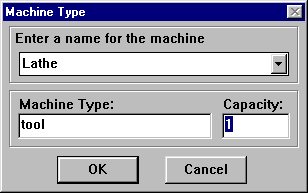
The dialogue box shows three pieces of information, the first being the name of the machine tool in this particular shop floor layout which is input by the user and may be anything which is meaningful to the user. The Machine type shows what class the selected machine fits into: machine classes are Tool, Robot, Transport, Inspection, Misc, Station and Inventory. The lathe chosen in this example is of type Tool. The last box shows how many components the device can handle at any one time: the capacity. In the case of this lathe, it is assumed that it has a work-holding device capable of holding a single component. This figure may be changed according to the type of machine and its proposed purpose.
Using the methods outlined above, a simple manufacturing cell may be created. The cell illustrated here consists of a lathe, a milling machine, a robot and a simple inventory device. Note, each shop floor must have an inventory device of some sort, since any form of manufacturing requires a supply of raw material.
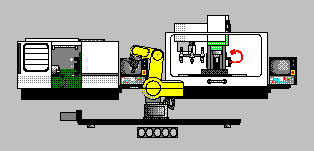
Once the shop floor is defined, the user can analyse some important features, namely the shop floor’s ‘cellular structure’ and ‘transportation network’. The cellular structure of a shop floor is how the layout is broken down into manufacturing cells. The configurator defines a cell as an autonomous unit of automation capable of performing a single task, such as machining, material transport, storage, inspection and so on. The example of the lathe, miller, robot and simple inventory device constitutes a single machining cell, as can be seen using the
View menu and selecting the CellStructure item.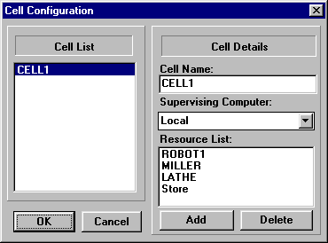
Using the Cell Structure command, the user can analyse the shop floor to inspect the cellular structure. The left side of this dialogue box shows a list of all the cells in the system. If this is the first time the cell structure has been calculated, the computer generates names for the cells. A cell may be selected from the
Cell List by clicking the left mouse button over its name. When a cell is selected, its details are shown in the right half of the dialogue box. The Cell Name and Supervising Computer can be changed by altering the text in the edit box. The Resource List – the machines contained within the cell – can be altered with the two buttons labelled Add and Delete. When adding a machine, a dialogue box appears which lists all the machines on the shop floor. One machine can be selected from this list and the OK button returns to the Cell Configuration dialogue and inserts the machine into the Resource List. To delete a machine from the Resource List, select it and press the Delete button.The transportation network is another important analysis tool. This allows the user to see how material flows throughout the system, starting from the inventory device.
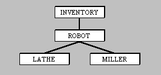
This network can be calculated and displayed using the
View menu, by selecting the TransportNetwork item. The network above corresponds to the single cell demonstration previously given and shows the material transport from its inventory device, through material handling devices and into machines.Three important data structures were generated and displayed in the above process: the shop floor layout; its cellular structure; and the material transportation network. To save these to the database, choose
Save from the File menu and type in the name for this shop floor. Three files will be generated with the extensions .sfl, .cel and .net corresponding to the data structures above. If the user saves a Shop Floor Layout without first viewing the Cell Configuration or the Transport Network, the data structures are generated and saved automatically.
Configurator Controls
The
File MenuNew
– Creates a new, empty shop floor window.Open
– Retrieves an existing shop floor from the database and displays it in a new window.Save
– First ensures that all data-structures have been generated and prompts the user if they have not. If a shop floor is untitled, a dialogue box requests a name. If the data structures are complete, then the three data structures will be saved to the database with the following extensions:.sfl
The shop floor layout.cel
The cellular structure.net
The transportation netSaveAs
– Allows the shop floor to be saved with a different name.Exit
– Quits the application after first making sure that all data is saved.
The
View MenuShopFloor
– Shows the basic shop floor and allows the user to edit the machine layout.CellStructure
– Calculates and displays the Cellular structure of the shop floor.TransportNet
– Calculates and displays the hierarchical transportation network for materials in the shop floor.Robot Reach
– If a robot is currently selected, this menu item opens a dialogue box displaying the reach envelope for this robot (the area around it that can be reached by the gripper). It also shows which other machine tools are situated within the area and can therefore be loaded or unloaded by that robot.
The Toolbar
Along the top of the main window of the Configurator is a row of buttons called the toolbar. The buttons show icons of different machine tools and allow the user to select the different machines to place onto the shop floor.
The toolbar is created when the Configurator is started from an Initialisation file called
config.ini, found in the \cim\bin directory. This file is structured to allow machines to be grouped under different categories according to their functions. The categories are:Inventory – A machine or device to store raw materials, completed components or both. It may be automated or a simple rack-like device to be used with a robot.
Station – An transfer point between cells, either a physical device such as a palette-stop on a Conveyor, where material is transferred from the Conveyor Cell to another cell, or a logical transfer point where material simply moves from one cell to another. For example, an Automated Storage and Retrieval System loads palettes onto a Conveyor at a logical transfer point because there is no physical device to act as an interface.
Tool – A machine tool which alters the shape or appearance of some material or partially completed component, such as a Lathe, Miller, or De-burring machine.
Robot – Most often an ‘in-cell’ material handling machine used for pick-and-place operations, but could be used for ‘inter-cell’ transport, assembly, or component feeding from an inventory device.
Inspection – A device which reports the status or measurements of a component to the supervising Cell-Manager.
Transport – An ‘inter-cell’ material transport device such as a Conveyor or an Automated Guided Vehicle.
Misc. – Anything not covered by the above categories. Note that the ‘Delay’ machine falls into this category; it may be used as a communication relay to another device. For more details see the Delay Machine in the following section.
In the Initialisation file, the categories are enclosed in square brackets and are followed by a list of machine tool entries, each with numbers which internally reference the machine and its corresponding button in the toolbar. These numbers are pre-set for the default set of machine tools.
The Default Machine Tool Set
Inventory
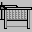
The Automated Storage and Retrieval System (AS/RS) comprises a gantry robot arm and two banks of storage racks, one for storing raw materials and one for completed components.
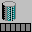
A completely un-automated storage rack for material, used in conjunction with a pick-and-place robot capable of reaching each component in the rack.
Station
The interface between cells where a palette or a component leaves one cell and enters another.
Robot
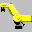
A simple pick-and-place articulated robot, suitable for load/unload operations with machine tools. It can also be used with a simple Inventory device.
The same robot as above mounted on a sliding base to increase its reach; the robot can now service more than one machine.
Transport
This icon starts the built-in Conveyor Design Utility which allows you to define a conveyor layout (indexible or palletised) and place it on the shop floor. The Conveyor Design Utility is described in the next section.
The Automated Guided Vehicle (AGV) tape icon allows the user to create a path for the AGV. See below for a description of its use.
Tool
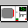
A small CNC lathe suitable to be used in an automated environment, i.e. with an automated guard and a tool-changer.
A small CNC milling machine suitable to be used in an automated environment, i.e. with an automatic guard and tool-changer.
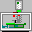
Inspection
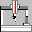
A Co-ordinate Measuring Machine (CMM) for accurate and detailed measurements of components. It must be serviced by a robot.
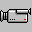
A video camera which can be mounted alongside or above a station. It may be used for a variety of purposes including material verification, component recognition or measurement.
Misc.
The Delay Machine. The final device category includes the clock icon, which may be used at a station to stop a palette or component for a period of time. This device may also be used to send a command to any other cell in the system. See the case study for an example of its usage.
The Conveyor Design Utility
When a conveyor is integrated into a shop floor layout its shape must be defined to ensure that material and components flow as desired to each cell. Modern conveyors tend to be constructed in modular sections, e.g. straight sections, curved sections and corner sections. The software in the Configurator reflects this and allows the user to design a customised conveyor layout. Pressing the Conveyor button in the toolbar produces a dialogue box which allows the user to define the shape of a conveyor.
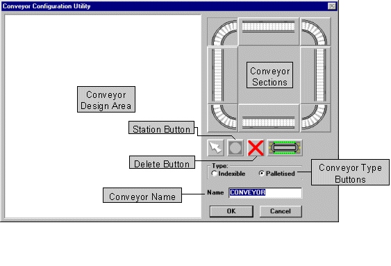
The buttons on the right represent the modular conveyor sections available. Unlike the toolbar buttons in the main window, a conveyor-section button remains depressed and stays ‘selected’ until the user chooses a different button. This allows the user to place several identical sections without continuously pressing the same button. Stations can also be added where pallet stop devices are situated on a palletised conveyor or where material enters or leaves an indexible conveyor.
To place a conveyor section or a station into the design area, a similar procedure to placing a machine onto a shop floor layout must be performed; select a conveyor section by pressing the appropriate button, move the mouse to the design area (note the cursor changes to a screw-driver) and press and hold the left mouse button down. A rectangle showing the dimensions of the conveyor section appears and can be moved around whilst holding the left mouse button down. When the button is released the conveyor section is finally positioned in the design area.
A conveyor section or station can be removed using the Segment Delete button. When the cursor moves in the design area, a highlight appears around the conveyor section below the cursor. If the mouse button is pressed, that section is removed. Again, the Segment Delete function remains active until a conveyor section button is pressed.
There are two primary types of conveyor available: an indexible conveyor, on which components move according to explicit commands from the conveyor's device driver, and a palletised conveyor, where components in special work-holding palettes move continually on the conveyor and must be stopped at a station using a physical stopping device. The conveyor selection buttons at the bottom of the dialogue box indicate the conveyor type. When the type is changed, the design area is cleared and the conveyor section graphics change to show the new conveyor type.
It is important to note that the direction of flow on the conveyor has to be consistent within a single conveyor layout.
When the conveyor is complete it must be given a name in the
Name edit box. This name must be no more than eight characters long since it is used as a separate filename when the shop floor is saved. The conveyor is saved to a file with a .dev extension. When the OK button is pressed, the dialogue is closed and the cursor appears as a conveyor shape over the shop floor area. The new conveyor can be placed anywhere on the shop floor in the usual manner.
Robot Reach Utility
When the user selects a robot on the shop floor, the
Robot Reach item from the View menu can be used to show graphically the robot’s reach envelope.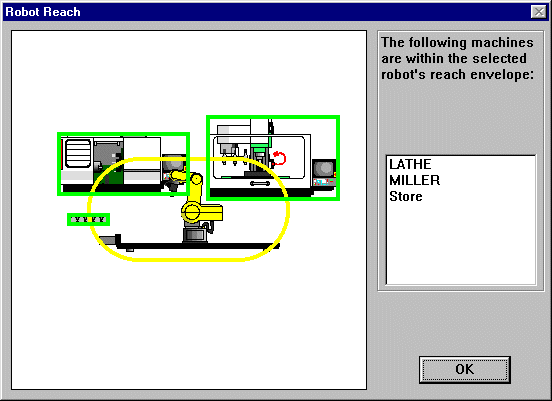
The area to the left shows the robot’s envelope and all machines nearby. Each machine within that envelope is hi-lighted in green and the machines are listed on the right. Pressing the
OK button returns to the Shop Floor view.